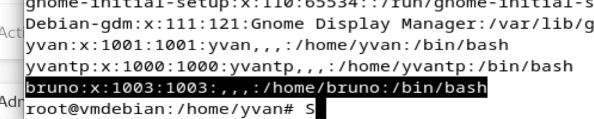
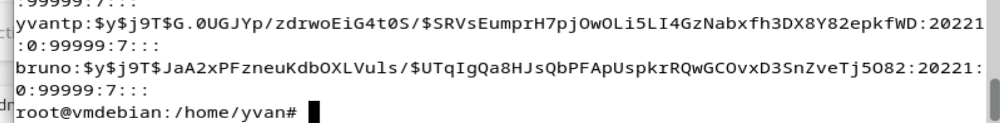
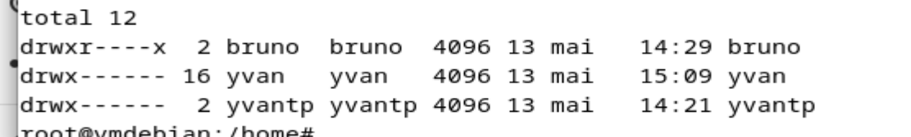

Les fichiers de gestion des comptes
Sous Linux, les informations sur les utilisateurs sont stockées dans deux fichiers principaux : /etc/passwd (liste des utilisateurs et leurs infos) et /etc/shadow (mots de passe hashés). Les groupes sont dans /etc/group. Ces fichiers sont lisibles avec cat ou less.

Gestion des groupes
Les groupes permettent de gérer les permissions pour plusieurs utilisateurs à la fois. La commande groupadd crée un groupe, usermod -aG groupe utilisateur ajoute un utilisateur à un groupe. La commande groups affiche les groupes d'un utilisateur.

groupadd devs useradd -m yvan usermod -aG devs yvan groups yvan
Droits et permissions
La commande ls -la affiche les permissions de chaque fichier. Le format drwxr-xr-- se lit : type (d=dossier), droits propriétaire (rwx), droits groupe (r-x), droits autres (r--). chmod modifie ces droits.
